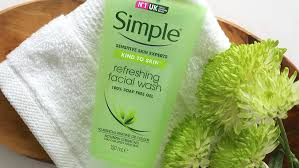
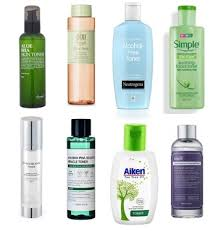
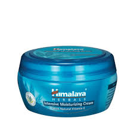
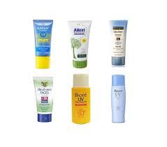

Why we need to take care our skin? The main reason is to keep our skin stay healthy and comfortable. This is because some of us have been struggling at some point with the discomfort of hot, dehydrated skin and we may be frustrating because of it. So, here are some tips for basic skincare routine for daytime.

1. Cleanser
Start in the morning, you need to wash your skin with a gentle face cleanser suitable for your skin type.

2. Toner
It's up to you to use toner or not, if you don't use toner and your skin stays healthy, you don't have to use it. But using toner, can help keep the skin fresh and humid.
3. Serum
Serums are super-concentrated, nutrient-dense therapies that resolve specific concerns, so you can use any serum that offer from drug stores as long as it for daytime.

4. Moisturizer
Everyone with all skin type need moisturizer for their skin that also include oily skin type. The best time to apply a moisturizer is when the skin is still wet, so that it can secure your moisturizer into needed hydration.

5. Sunscreen
The last step skin care routine for daytime is sunscreen. You need to use Sunscreen as it offers the highest SPF and optimum protection for your skin when exposed to sunlight.